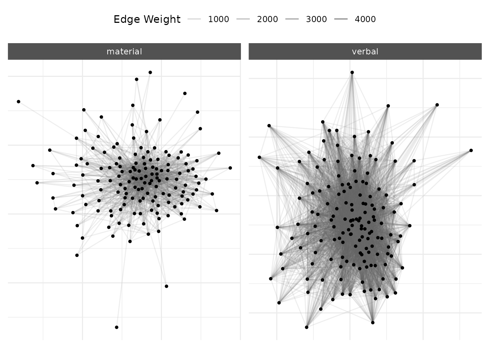
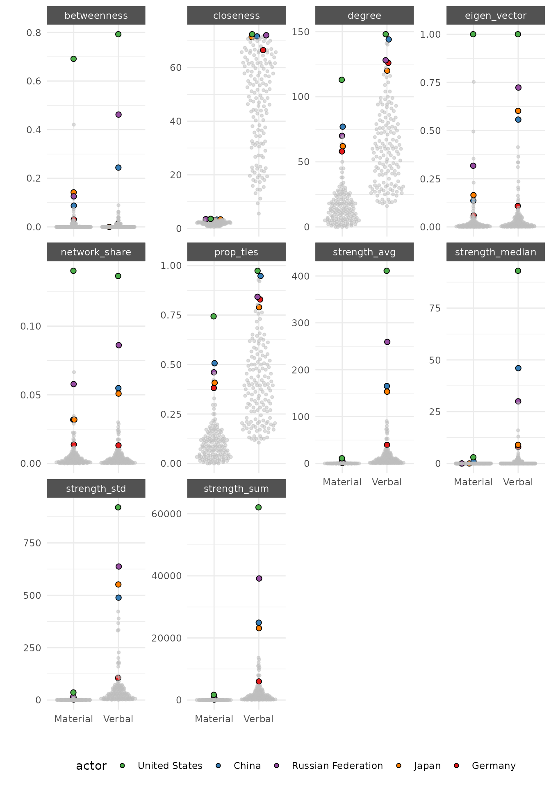
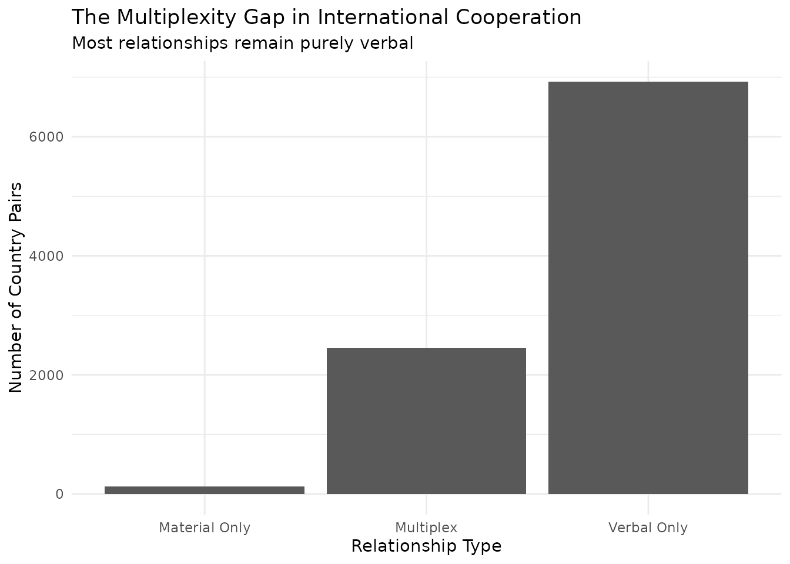
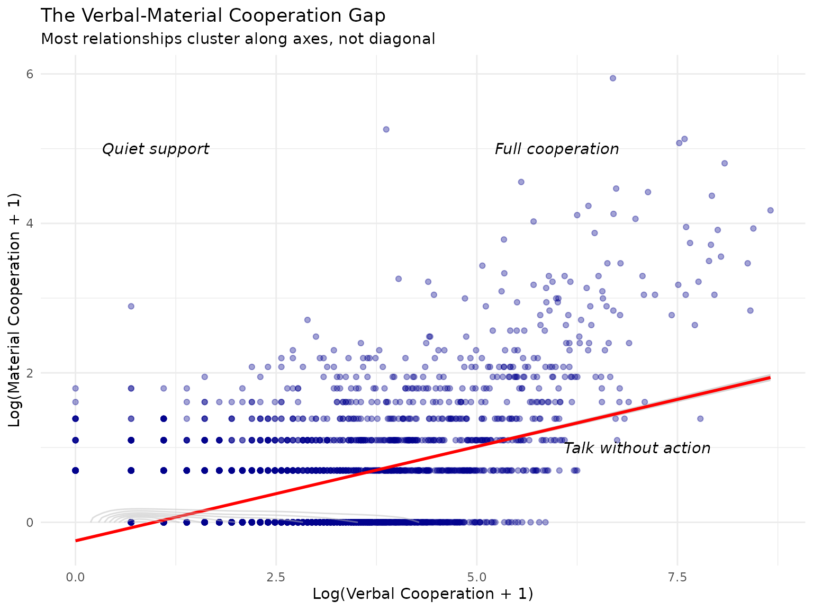
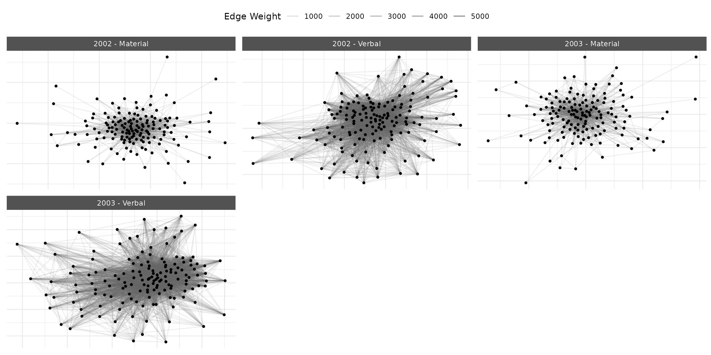

Multilayer Networks
Cassy Dorff and Shahryar Minhas
2026-02-20
Source:vignettes/multilayer_networks.Rmd
multilayer_networks.RmdThis vignette demonstrates how to analyze multilayer networks in
netify. Multilayer networks capture multiple types of
relationships between the same actors – a crucial feature for
understanding complex political systems where actors interact through
various channels simultaneously.
Why Multilayer Networks Matter for Social Science
Traditional network analysis forces us to choose: study trade OR conflict, cooperation OR competition, formal OR informal ties. But political reality is multilayered. States that trade may also fight. Legislators who cosponsor bills may attack each other on social media. Ignoring these multiple, simultaneous relationships leads to incomplete and potentially misleading conclusions.
Multilayer networks solve this problem by allowing us to analyze multiple relationship types together, revealing:
- Substitution effects: Do actors use one type of relationship instead of another?
- Complementarities: Do certain relationships tend to co-occur?
- Cross-layer influence: Does position in one network affect behavior in another?
- Structural coupling: How do different relationship types shape each other?
Quick Start Example
We’ll use data from the Integrated Crisis Early Warning System (ICEWS) throughout here.
library(netify)
library(dplyr)
library(tidyr)
library(ggplot2)
# Load the ICEWS event data
data(icews)
# Create a simple multilayer network for 2010
icews_2010 <- icews[icews$year == 2010, ]
# Verbal cooperation network
verbal_net <- netify(
icews_2010,
actor1 = "i", actor2 = "j",
weight = "verbCoop"
)
# Material cooperation network
material_net <- netify(
icews_2010,
actor1 = "i", actor2 = "j",
weight = "matlCoop"
)
# Combine into multilayer network
multi_net <- layer_netify(
list(verbal = verbal_net, material = material_net)
)
# Quick visualization
plot(multi_net, add_text = FALSE)
What we see: Even this simple example reveals the “cheap talk” problem in international relations. The verbal cooperation network (left) is dense with connections, while material cooperation (right) is sparse. Most diplomatic promises don’t translate into material support.
Building Multilayer Networks: A Substantive Example
Let’s build a more complete multilayer network to study international cooperation patterns during a critical period – 2002, shortly after 9/11 when cooperation dynamics were rapidly shifting.
# Focus on 2002 - post-9/11 cooperation dynamics
icews_2002 <- icews[icews$year == 2002, ]
# Create networks with relevant attributes
verbal_coop_net <- netify(
icews_2002,
actor1 = "i", actor2 = "j",
symmetric = TRUE,
weight = "verbCoop",
nodal_vars = c("i_polity2", "i_log_gdp", "i_log_pop", "i_region"),
dyad_vars = c("verbConf", "matlConf")
)
material_coop_net <- netify(
icews_2002,
actor1 = "i", actor2 = "j",
symmetric = TRUE,
weight = "matlCoop",
nodal_vars = c("i_polity2", "i_log_gdp", "i_log_pop", "i_region"),
dyad_vars = c("verbConf", "matlConf")
)
# Combine into multilayer network
multilayer_net <- layer_netify(
netlet_list = list(verbal_coop_net, material_coop_net),
layer_labels = c("Verbal", "Material")
)
print(multilayer_net)Visualizing Multilayer Structures
Basic Visualization with Interpretation
plot(multilayer_net,
add_text = FALSE,
node_size_by = "i_log_gdp",
node_color_by = "i_region"
) +
theme(
legend.position = "right"
)This visualization reveals the fundamental asymmetry in international cooperation. The verbal layer shows the “diplomatic commons” – nearly all countries engage in diplomatic discourse. The material layer reveals the “cooperation core” – a much smaller set of countries that back words with resources. Node sizes (GDP) show that while large economies participate in both networks, material cooperation isn’t simply a function of capacity.
Comparing Network Structures
# Get structural comparison
struct_comp <- compare_networks(multilayer_net, what = "structure")
print(struct_comp)
#> network num_actors density num_edges prop_edges_missing mean_edge_weight
#> 1 Verbal 152 0.406 9378 0 19.800
#> 2 Material 152 0.111 2576 0 0.521
#> sd_edge_weight median_edge_weight min_edge_weight max_edge_weight competition
#> 1 145.3 0 0 5760 0.040
#> 2 5.5 0 0 380 0.038
#> sd_of_actor_means transitivity mean_degree
#> 1 44.80 0.606 123.4
#> 2 1.14 0.311 33.9
#> metric value_net1 value_net2 absolute_change
#> num_actors num_actors 152.000 152.000 0.000
#> density density 0.406 0.111 -0.294
#> num_edges num_edges 9378.000 2576.000 -6802.000
#> prop_edges_missing prop_edges_missing 0.000 0.000 0.000
#> mean_edge_weight mean_edge_weight 19.800 0.521 -19.300
#> sd_edge_weight sd_edge_weight 145.300 5.500 -139.800
#> median_edge_weight median_edge_weight 0.000 0.000 0.000
#> min_edge_weight min_edge_weight 0.000 0.000 0.000
#> max_edge_weight max_edge_weight 5760.000 380.000 -5380.000
#> competition competition 0.040 0.038 -0.002
#> sd_of_actor_means sd_of_actor_means 44.800 1.140 -43.700
#> transitivity transitivity 0.606 0.311 -0.295
#> mean_degree mean_degree 123.400 33.900 -89.500
#> percent_change
#> num_actors 0.00
#> density -72.50
#> num_edges -72.50
#> prop_edges_missing NA
#> mean_edge_weight -97.40
#> sd_edge_weight -96.20
#> median_edge_weight NA
#> min_edge_weight NA
#> max_edge_weight -93.40
#> competition -5.13
#> sd_of_actor_means -97.50
#> transitivity -48.70
#> mean_degree -72.50What these numbers mean:
- 4x density difference: For every material cooperation relationship, there are four verbal ones
- 3.6x degree difference: The average country verbally cooperates with 123 others but materially supports only 34
- Different clustering: Higher transitivity in verbal cooperation (0.606 vs 0.311) suggests diplomatic communities form more readily than material support clusters
This structural evidence supports the “cheap talk” hypothesis but also reveals something deeper: material cooperation follows different organizational logics than diplomacy.
Testing Political Science Theories with Multilayer Networks
Theory 1: Democratic Peace in Different Domains
Do democracies cooperate more with each other? And does this vary by cooperation type?
# Test homophily across layers
multilayer_homophily <- homophily(
multilayer_net,
attribute = "i_polity2",
method = "correlation"
)
print(multilayer_homophily)
#> net layer attribute method threshold_value homophily_correlation
#> 1 1 Verbal i_polity2 correlation 0 0.04162793
#> 2 1 Material i_polity2 correlation 0 0.01444973
#> mean_similarity_connected mean_similarity_unconnected similarity_difference
#> 1 -6.964294 -7.444698 0.4804043
#> 2 -7.016653 -7.279288 0.2626347
#> p_value ci_lower ci_upper n_connected_pairs n_unconnected_pairs
#> 1 0.000 0.022556816 0.06040362 4453 6573
#> 2 0.118 -0.005798522 0.03469609 1201 9825
#> n_missing n_pairs
#> 1 3 11476
#> 2 3 11476Democratic homophily exists in verbal cooperation (p < 0.001) but not material cooperation (p = 0.13). This suggests the “democratic peace” operates primarily through diplomatic channels. Material support crosses regime boundaries, likely driven by strategic rather than ideological considerations.
Theory 2: Regional Security Complexes
Do security concerns create regional cooperation clusters? Let’s examine regional patterns:
# Regional mixing patterns
multilayer_mixing <- mixing_matrix(
multilayer_net,
attribute = "i_region"
)
print(multilayer_mixing$summary_stats)
#> net layer attribute assortativity diagonal_proportion entropy modularity
#> 1 1 Verbal i_region 0.1558717 0.3365323 3.350767 0.122512
#> 2 1 Material i_region 0.2184878 0.3835404 3.346822 0.172344
#> n_groups total_ties
#> 1 7 9378
#> 2 7 2576Material cooperation shows stronger regional clustering (assortativity = 0.218) than verbal cooperation (0.156). This supports regional security complex theory – when countries commit resources, they prioritize neighbors. Verbal cooperation, being cheaper, can afford to be more globally distributed.
Theory 3: Conflict-Cooperation Dynamics
How does conflict in one domain relate to cooperation in another?
# Analyze conflict-cooperation relationships
cross_layer_corr <- dyad_correlation(
multilayer_net,
dyad_vars = c("verbConf", "matlConf"),
edge_vars = c("Verbal", "Material")
)
# Show key correlations
cross_layer_corr |>
select(dyad_var, edge_var, correlation, p_value) |>
filter(row_number() <= 4) # Show first 4 unique combinations
#> dyad_var edge_var correlation p_value
#> 1 verbConf Verbal 0.4557314 0
#> 2 matlConf Verbal 0.2783377 0
#> 3 verbConf Material 0.2692519 0
#> 4 matlConf Material 0.2791647 0Verbal conflict strongly correlates with verbal cooperation (r = 0.456) – countries that talk also argue. But material conflict shows weaker correlations with cooperation, suggesting material interactions follow different dynamics than diplomatic ones.
Identifying Strategic Actors
Who Bridges the Cooperation Gap?
Some countries specialize in material cooperation despite limited diplomatic engagement:
# Find actor-level patterns
actor_stats <- summary_actor(multilayer_net)
# Identify material cooperation specialists
centrality_comparison <- actor_stats |>
select(actor, layer, degree, betweenness, strength_sum) |>
pivot_wider(names_from = layer, values_from = c(degree, betweenness, strength_sum))
material_specialists <- centrality_comparison |>
mutate(
material_bias = betweenness_Material / (betweenness_Verbal + 1)
) |>
filter(betweenness_Material > quantile(betweenness_Material, 0.75, na.rm = TRUE)) |>
arrange(desc(material_bias)) |>
head(5)
print("Material cooperation brokers:")
#> [1] "Material cooperation brokers:"
print(material_specialists[, c("actor", "betweenness_Verbal", "betweenness_Material", "material_bias")])
#> # A tibble: 5 × 4
#> actor betweenness_Verbal betweenness_Material material_bias
#> <chr> <dbl> <dbl> <dbl>
#> 1 Afghanistan 0.0132 0.421 0.415
#> 2 United States 0.793 0.691 0.386
#> 3 Japan 0.0000883 0.142 0.142
#> 4 Iraq 0.0260 0.116 0.113
#> 5 Russian Federation 0.462 0.126 0.0860Japan leads as a material cooperation broker despite low verbal centrality – reflecting its post-WWII strategy of economic rather than diplomatic leadership. Countries in conflict or transition (Colombia, DRC, Ukraine) also appear as material brokers, likely as aid conduits.
Power Dynamics Across Layers
# Compare major powers
plot_actor_stats(
actor_stats,
across_actor = FALSE,
specific_actors = c("United States", "China", "Russian Federation", "Japan", "Germany")
)
Power Analysis:
- The US dominates both layers, confirming hegemonic status
- Russia shows high verbal but lower material engagement – influence through diplomacy rather than resources
- China (in 2002) shows moderate engagement, presaging its later rise
- Japan’s material cooperation exceeds its diplomatic footprint
- Germany balances both dimensions, reflecting EU leadership
Understanding Multiplexity: The Architecture of International Relations
Multiplexity analysis reveals which relationships involve multiple types of interaction – a key indicator of relationship depth and stability:
# Analyze edge patterns
verbal_melt <- melt(verbal_coop_net, remove_zeros = FALSE, na.rm = TRUE)
material_melt <- melt(material_coop_net, remove_zeros = FALSE, na.rm = TRUE)
edge_comparison <- merge(
verbal_melt,
material_melt,
by = c("Var1", "Var2"),
suffixes = c("_verbal", "_material")
) |>
filter(value_verbal > 0 | value_material > 0)
# Categorize relationships
multiplexity_summary <- edge_comparison |>
mutate(
relationship_type = case_when(
value_verbal > 0 & value_material > 0 ~ "Multiplex",
value_verbal > 0 ~ "Verbal Only",
value_material > 0 ~ "Material Only"
)
)
# Summary and visualization
table(multiplexity_summary$relationship_type)
#>
#> Material Only Multiplex Verbal Only
#> 124 2452 6926
ggplot(multiplexity_summary, aes(x = relationship_type)) +
geom_bar() +
labs(
title = "The Multiplexity Gap in International Cooperation",
subtitle = "Most relationships remain purely verbal",
x = "Relationship Type",
y = "Number of Country Pairs"
) +
theme_minimal()
Multiplexity Insights:
- Only 26% of relationships are multiplex (involving both verbal and material cooperation)
- 124 “material only” relationships deserve attention – these might represent covert cooperation or technical assistance below the diplomatic radar
- The 2,452 multiplex relationships form the stable core of international cooperation
Who Has Multiplex Relationships?
# Identify multiplex relationships
multiplex_pairs <- multiplexity_summary |>
filter(relationship_type == "Multiplex") |>
mutate(total_coop = value_verbal + value_material) |>
arrange(desc(total_coop)) |>
head(10)
print("Strongest multiplex relationships:")
#> [1] "Strongest multiplex relationships:"
print(multiplex_pairs[, c("Var1", "Var2", "value_verbal", "value_material")])
#> Var1 Var2 value_verbal value_material
#> 1 Russian Federation United States 5760 64
#> 2 United States Russian Federation 5760 64
#> 3 Israel United States 4652 50
#> 4 United States Israel 4652 50
#> 5 China United States 4481 16
#> 6 United States China 4481 16
#> 7 Japan United States 4334 31
#> 8 United States Japan 4334 31
#> 9 Pakistan United States 3252 121
#> 10 United States Pakistan 3252 121US-Russia tops the list despite tensions, showing how former adversaries maintain multiple channels. US relationships with allies (Israel, Japan) and strategic competitors (China) also show high multiplexity, indicating relationship importance transcends simple friend/foe categories.
Advanced Analysis: Layer Dependencies
How Do Layers Relate?
# Comprehensive layer comparison
layer_comparison <- compare_networks(multilayer_net, what = "edges", method = "all")
print(layer_comparison)
#> comparison correlation jaccard hamming qap_correlation qap_pvalue
#> 1 Verbal vs Material 0.472 0.258 0.305 0.472 0
#> spectral
#> 1 9.12e+04
#> Verbal Material
#> Verbal 1.0000000 0.4718002
#> Material 0.4718002 1.0000000
#> Verbal Material
#> Verbal 0 0
#> Material 0 0
#> attr(,"n_perm")
#> [1] 5000Key Metrics Explained:
- Correlation (0.472): Moderate positive relationship – verbal cooperation somewhat predicts material cooperation
- Jaccard (0.258): Only 26% edge overlap – most relationships exist in just one layer
- Hamming (0.305): About 30% of possible edges differ between layers
- QAP test (p < 0.001): The correlation is statistically significant, not due to chance
Visualizing Layer Relationships
# Cross-layer scatter
ggplot(edge_comparison, aes(x = log1p(value_verbal), y = log1p(value_material))) +
geom_point(alpha = 0.2, color = "darkblue") +
geom_smooth(method = "lm", color = "red", se = TRUE) +
geom_density_2d(color = "gray", alpha = 0.5) +
labs(
title = "The Verbal-Material Cooperation Gap",
subtitle = "Most relationships cluster along axes, not diagonal",
x = "Log(Verbal Cooperation + 1)",
y = "Log(Material Cooperation + 1)"
) +
theme_minimal() +
annotate("text", x = 7, y = 1, label = "Talk without action", fontface = "italic") +
annotate("text", x = 1, y = 5, label = "Quiet support", fontface = "italic") +
annotate("text", x = 6, y = 5, label = "Full cooperation", fontface = "italic")
Temporal Dynamics in Multilayer Networks
Understanding how different layers evolve over time reveals changing cooperation dynamics:
# Create temporal multilayer network
years_example <- c(2001, 2002, 2003) # Around 9/11
icews_subset <- icews[icews$year %in% years_example, ]
verbal_temporal <- netify(
icews_subset,
actor1 = "i", actor2 = "j",
time = "year",
symmetric = TRUE,
weight = "verbCoop"
)
material_temporal <- netify(
icews_subset,
actor1 = "i", actor2 = "j",
time = "year",
symmetric = TRUE,
weight = "matlCoop"
)
temporal_multilayer <- layer_netify(
list(verbal_temporal, material_temporal),
layer_labels = c("Verbal", "Material")
)
# Visualize evolution
plot(temporal_multilayer,
add_text = FALSE,
facet_type = "wrap",
facet_ncol = 3
)
The post-9/11 period shows network evolution. Both layers densify from 2001 to 2003, but material cooperation grows more selectively, suggesting crisis-driven coalition building.
Practical Recommendations
When to Use Multilayer vs. Separate Analysis
Use multilayer when:
- Relationships theoretically influence each other
- You suspect substitution or complementarity effects
- Actor positions might differ across relationship types
- You need to identify relationship depth through multiplexity
Use separate analysis when:
- Relationships are theoretically independent
- Different actor sets across layers
- Computational constraints exist
- Initial exploration before multilayer modeling
Choosing Analysis Methods
-
For regime type effects: Use
homophily()with “correlation” method for continuous variables like polity scores -
For regional/categorical patterns: Use
mixing_matrix()to see full interaction patterns -
For relationship strength: Use
compare_networks()withwhat="edges"andmethod="all"for comprehensive comparison -
For individual actors: Use
summary_actor()and examine layer-specific centralities
tl;dr
Multilayer network analysis in netify reveals how
different types of political relationships interact, overlap, and
diverge. By moving beyond single-layer analysis, we can:
- Test more nuanced theories about international behavior
- Identify actors with specialized roles across different domains
- Understand the architecture of complex political systems
- Track how relationship portfolios evolve over time
- Most importantly … have fun!